Individual selections
Every jar , bottle and packet earns its place
Open any product for fuller serving ideas, pairings, storage notes and customer tips. Availability may vary, so message LEE for current stock.
Truffle Speciality Salsa al Tartufo 180g The generous jar for households that believe pasta should never be shy. Earthy, savoury and ready to turn a quiet dinner into a proper occasion.
View details & tips
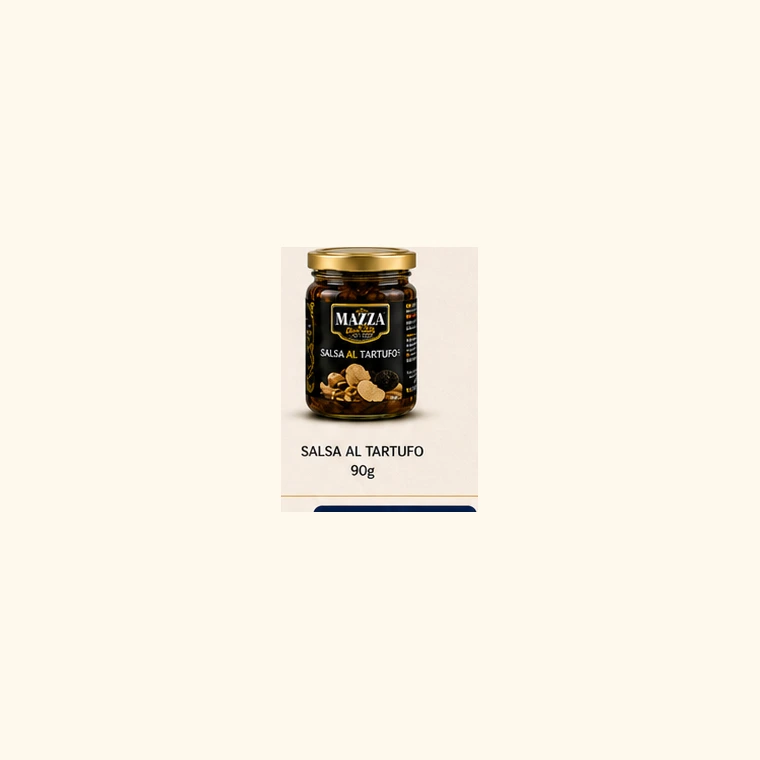
Truffle Speciality Salsa al Tartufo 90g A petite introduction to truffle richness. Perfect for a thoughtful gift, a date-night pasta, or the cook who likes a little luxury within reach.
View details & tips
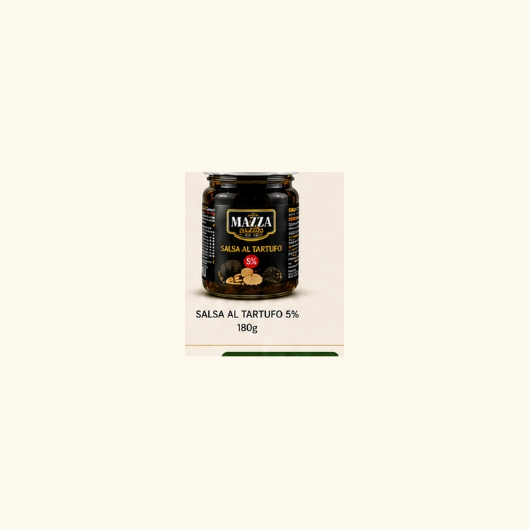
Truffle Speciality Salsa al Tartufo 5% Darker, bolder and more aromatic. This is the jar to open when the whole room should know something special is being cooked.
View details & tips
Finishing Oil Black Truffle Extra Virgin Olive Oil A final golden flourish. Drizzle sparingly and let the aroma settle like candlelight over eggs, chips, pasta and roasted vegetables.
View details & tips
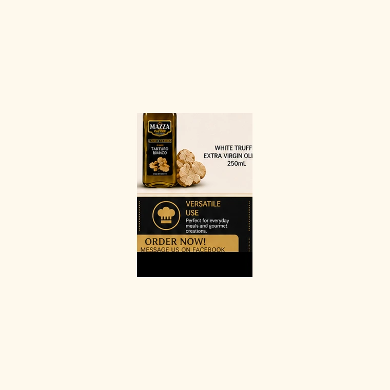
Finishing Oil White Truffle Extra Virgin Olive Oil Bright, graceful and perfumed. It gives soft dishes a polished edge, especially cream sauces, potatoes and warm bread.
View details & tips
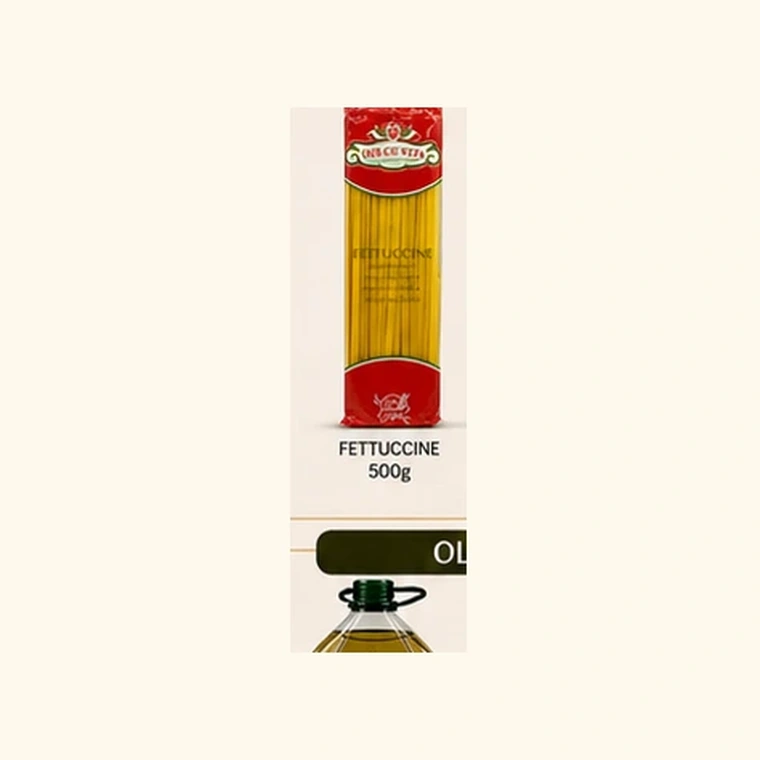
Pasta Fettuccine 500g Silky ribbons made for sauces that cling. A dependable base for truffle cream, pesto, tomatoes or a simple olive oil supper.
View details & tips
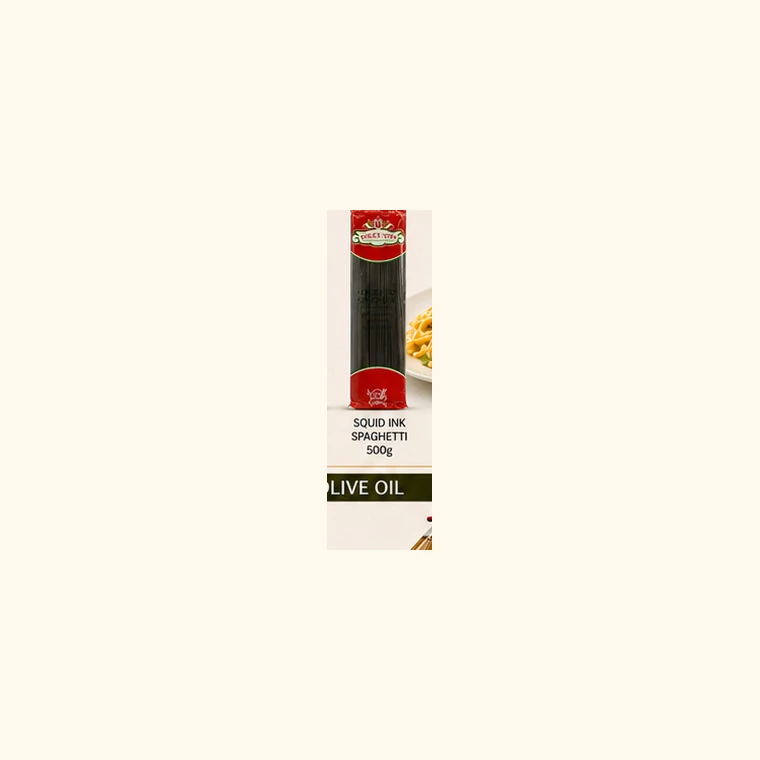
Pasta Squid Ink Spaghetti Midnight strands with Mediterranean drama. It plates beautifully with seafood, garlic, olive oil and a confident finishing flourish.
View details & tips
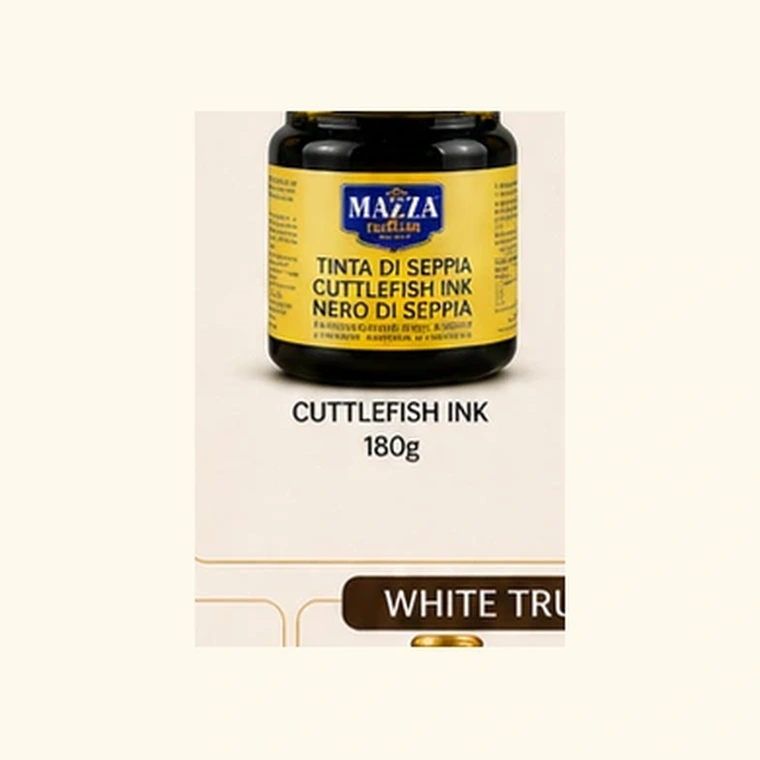
Ink Cuttlefish Ink A spoonful of sea-dark gloss. It brings depth, colour and a little theatre to risotto, seafood pasta and dramatic one-pan dishes.
View details & tips
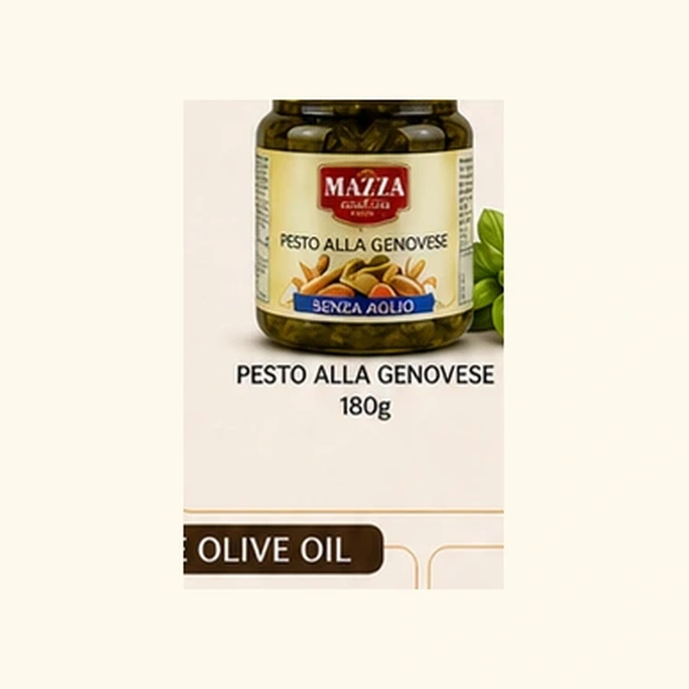
Pesto Pesto alla Genovese Green comfort in a jar: basil-rich, savoury and ready for pasta, sandwiches, potatoes, chicken or a quick grazing board.
View details & tips
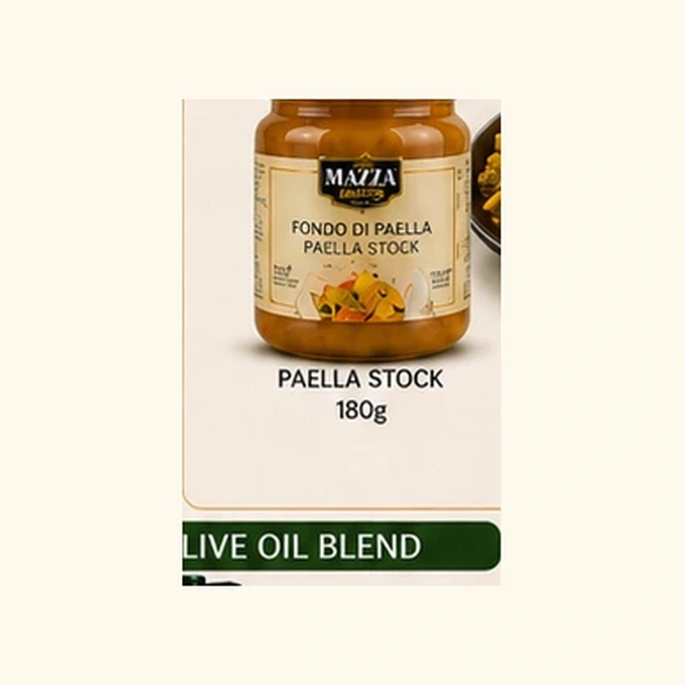
Stock Paella Stock A golden shortcut to a generous pan. Use it when you want rice, seafood or pasta to taste as though the afternoon was spent building flavour.
View details & tips
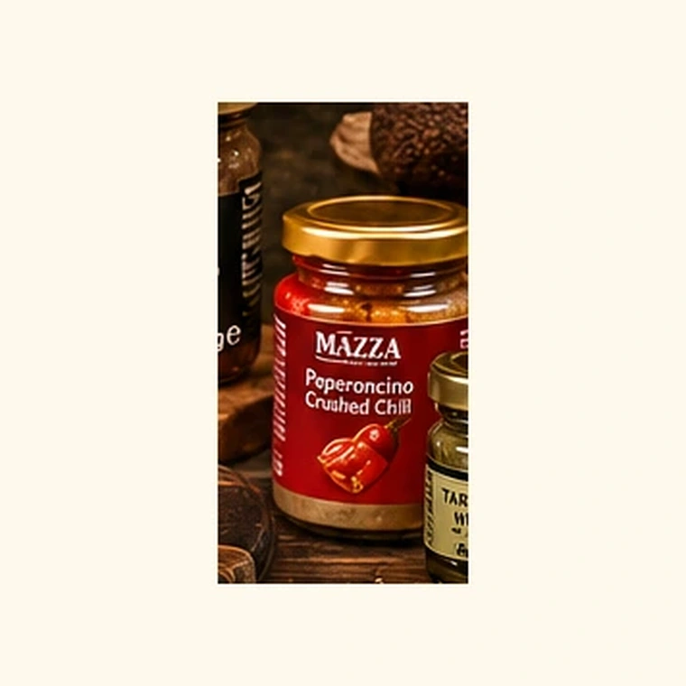
Condiment Peperoncino A small jar with a lively spark. Use it when a sauce needs lift, a toast needs heat, or a plate needs a little confidence.
View details & tips
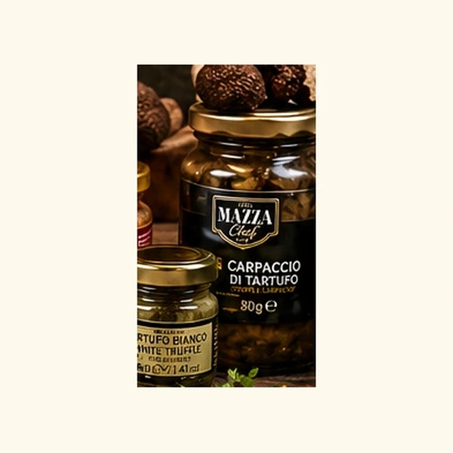
Truffle Carpaccio al Tartufo Thin truffle slices for finishing moments. A beautiful garnish for cheese, warm pasta, eggs and elegant appetisers.
View details & tips
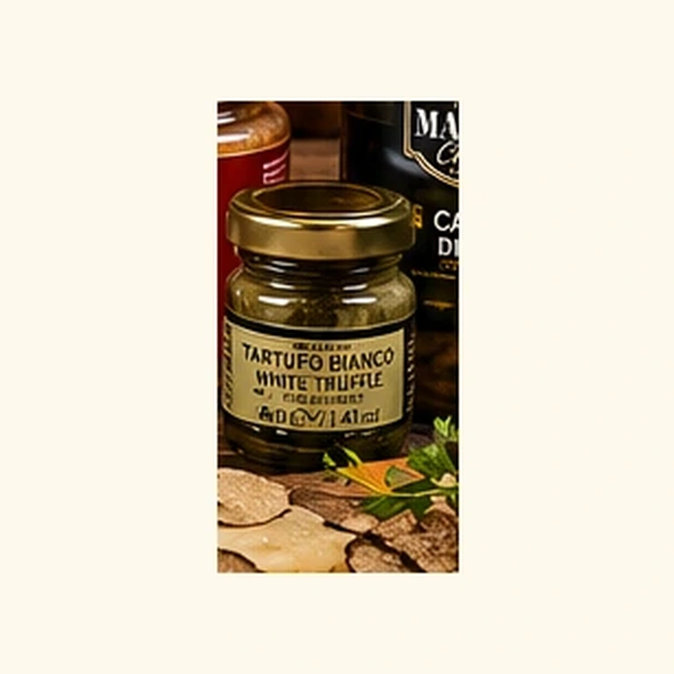
Condiment White Truffle Condiment Soft, fragrant and quietly luxurious. A little accent for warm bread, cheese, potatoes and plates that deserve a whisper of truffle.
View details & tips
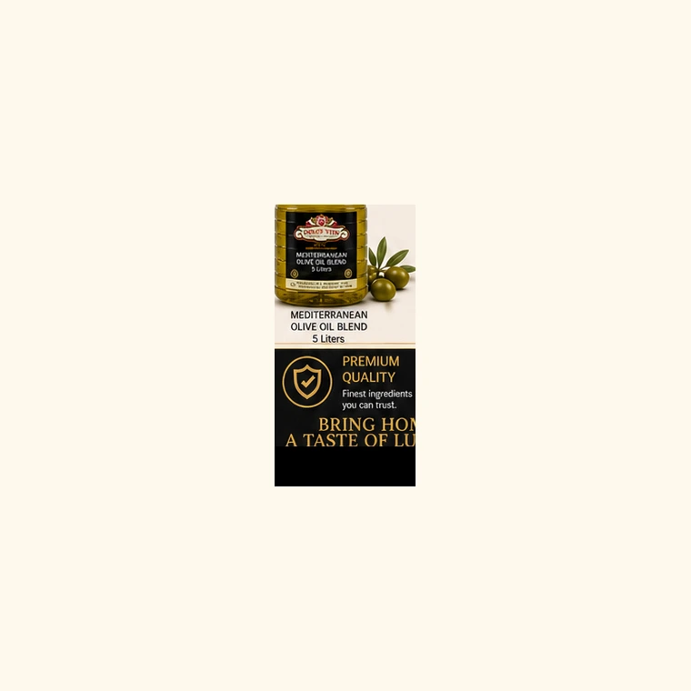
Olive Oil Mediterranean Olive Oil Blend The generous kitchen backbone: useful, dependable and ready for dressings, roasting, sautéing and everyday cooking.
View details & tips
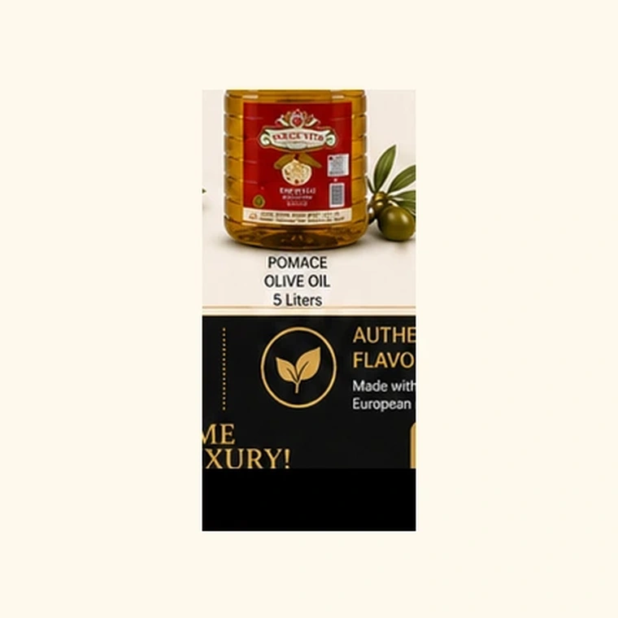
Olive Oil Pomace Olive Oil A practical pour for busy kitchens. Made for cooking days, family meals and the recipes that keep the table moving.
View details & tips
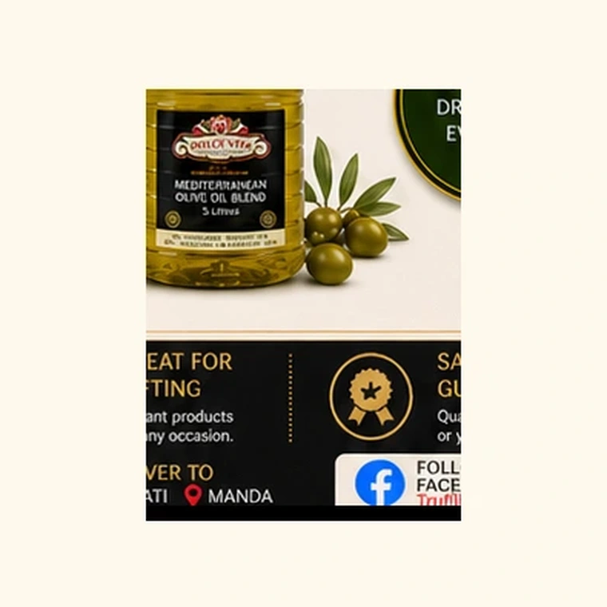
Olive Oil Olive Oil Blend 5L For homes that cook often and generously. A large-format pantry companion for dressing, marinating and everyday meals.
View details & tips